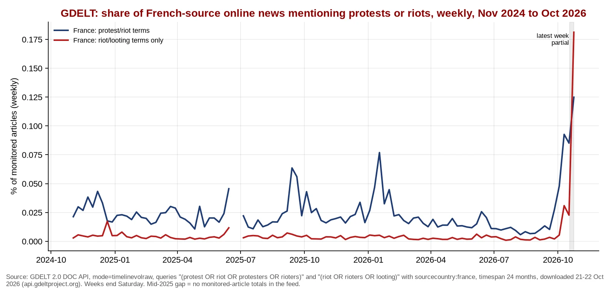
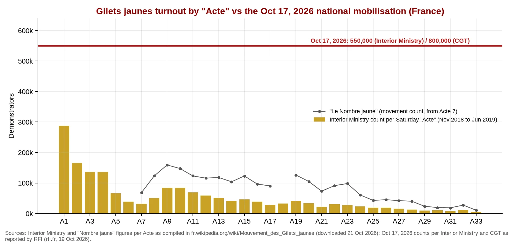
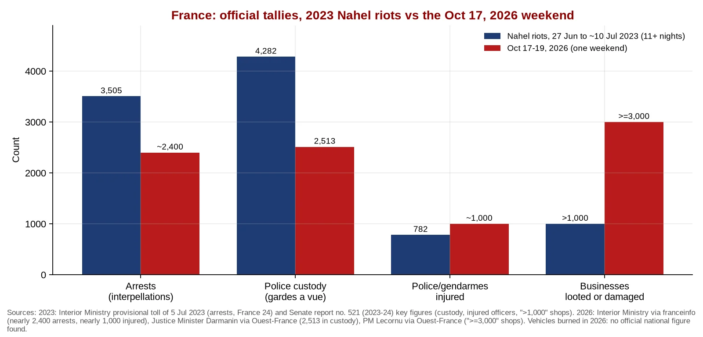

Q3. France: Anatomy of the October Wave

Graph 5. France: weekly share of French-sourced online news coverage mentioning protest/riot terms vs riot/looting-only terms (GDELT), 24 months. The riot/looting line is the better gauge of violence salience; both lines jump in late September and again after Oct 17. Source: GDELT DOC 2.0 API, timelinevolraw, sourcecountry:france (GDELT DOC 2.0 API). The mid-2025 gap is missing monitored-article totals in the feed.

Graph 6. Turnout: Gilets jaunes "Actes" (2018-19, Interior Ministry) vs Oct 17, 2026. Acte I on Nov 17, 2018 drew 287,700 by the ministry count; by the same count, Oct 17, 2026 (550,000) was nearly double that, though it was a joint union-student-GJ day, not a GJ Acte. Sources: Interior Ministry figures compiled in fr.wikipedia: Mouvement des Gilets jaunes; 2026 count via franceinfo: 550,000 (ministry) vs 800,000 (organisers).

Graph 7. Official tallies: 2023 Nahel riots (11+ nights) vs one weekend in October 2026. 2023: 3,505 arrests (Darmanin, Jul 5, 2023, TF1 Info: Darmanin's 2023 toll); custody, injured officers and more than 1,000 shops per the Senate report (Senate report no. 521 (2023-24)). 2026: about 2,400 arrests and about 1,000 officers injured (Interior Ministry), 2,513 in custody (LCP, Oct 20), at least 3,000 shops (Ouest-France live, Oct 19). No official national count of burned vehicles for 2026 was found.